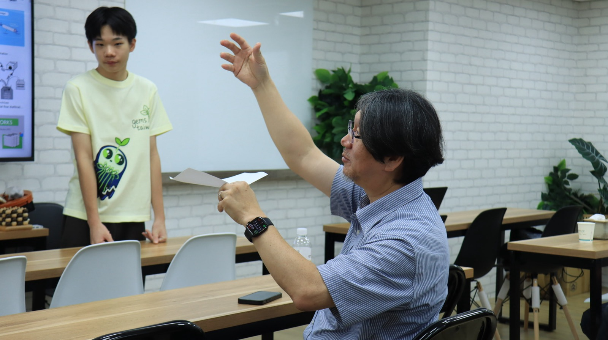
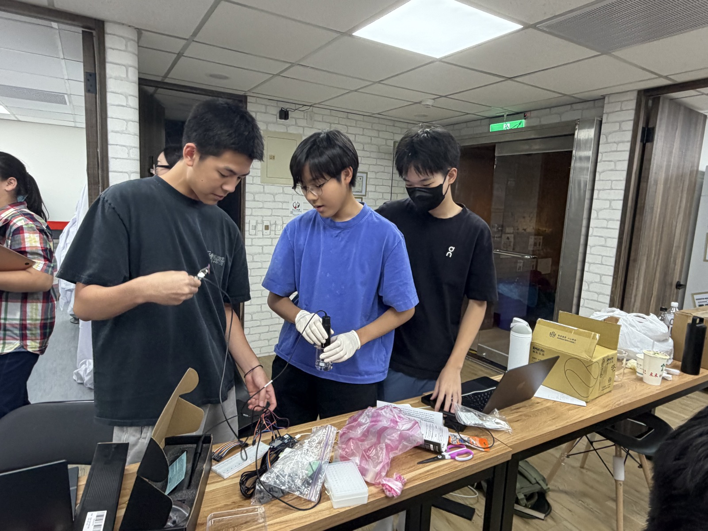
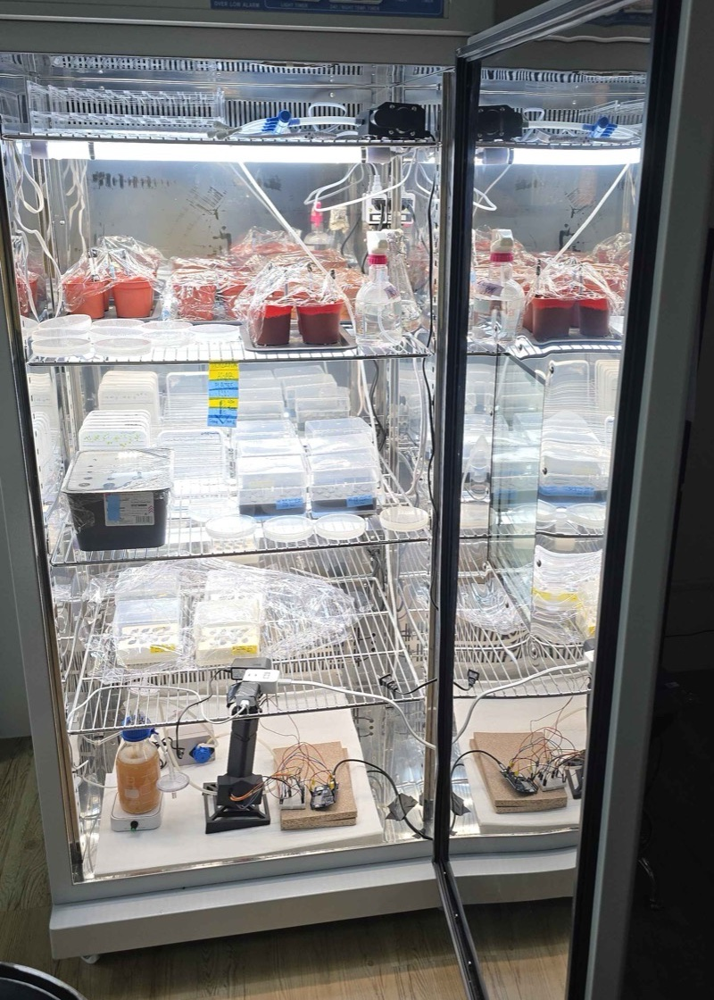
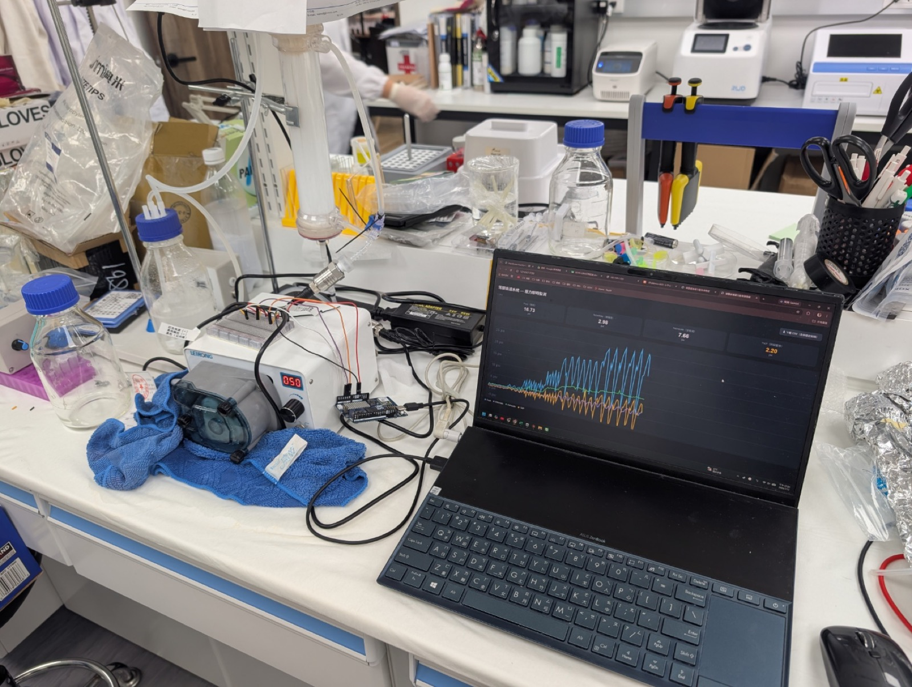
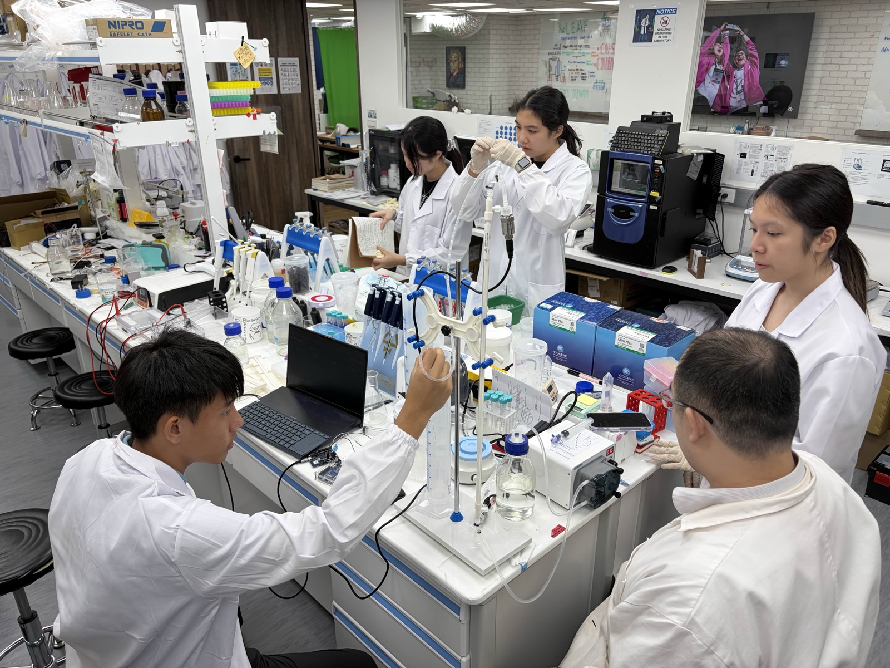
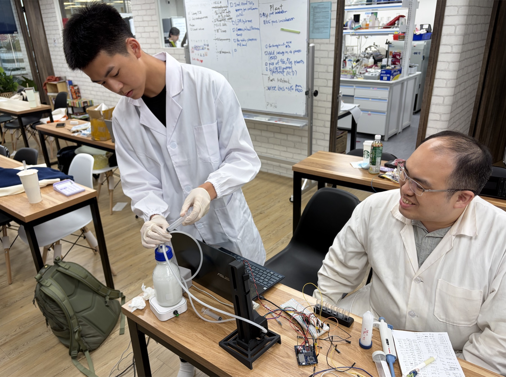
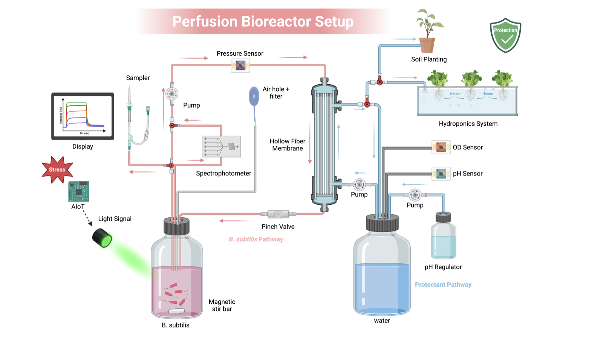
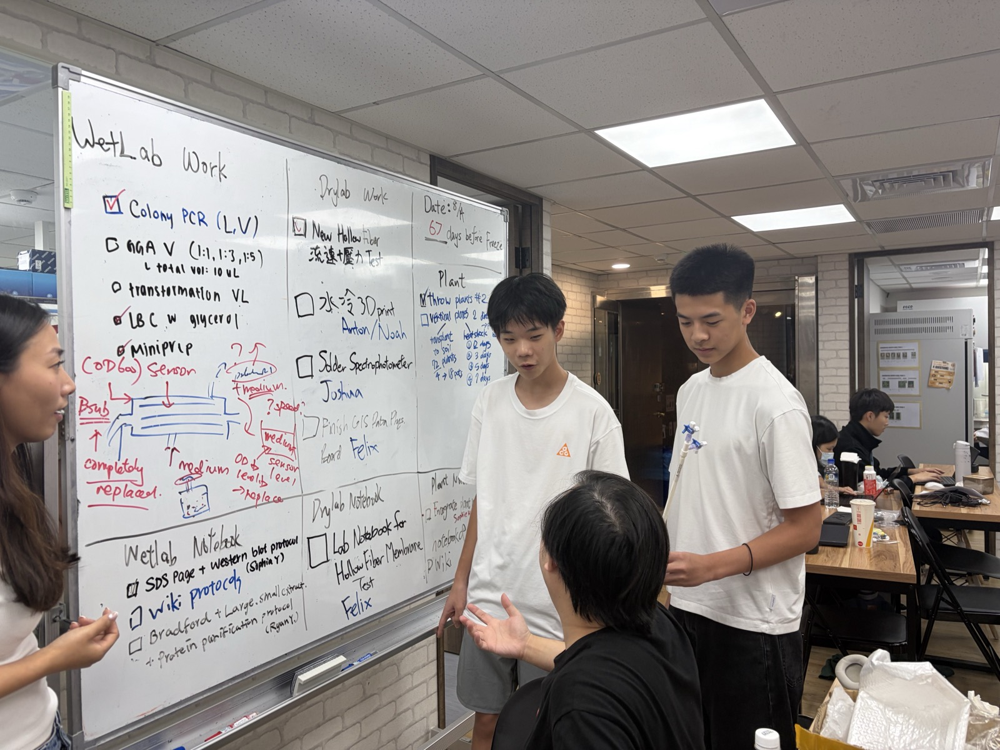

Prof. Chang, thank you for coming to GEMS on 18 June. We wrote down what you told us that
day and worked through it item by item. This page is the report back.
The reactor is not finished and the constitutive ACC deaminase run has not started. Rather than
wait until both are done, we would rather consult you before we build.
2026-06-18，團隊與張嘉修校長合影，背後是當天的「General Feedback from Prof. Chang」。18 June 2026, the team with Prof. Chang. The screen behind carries that day’s “General Feedback from Prof. Chang”.
Contents
On this page
166 天，五件事Five things in 66 days
您對反應器提了三件事：拉長測試時間、記錄硬體的測試範例、做一個測試用的操作介面。
這五件工作全部落在那三件上。You asked three things of the reactor: expand the testing time, record example tests of the
hardware, make a UI for reactor testing. All five pieces of work below land on those three.
線上光度計以 TiO₂ 濃度序列對 BioDrop 做了 45 點比對。壓力變送器與流速計各做了脫離反應器的獨立測試。200 cm² 模組規格登錄中，含它取代的舊規格。The photometer was compared against BioDrop across a 45-point TiO₂ series. Pressure transducer and flow meter each tested standalone. The 200 cm² module is being specified, including the record it supersedes.
Growth curve / density → input to hardware（您在基因線路那段提的）Growth curve / density → input to hardware (raised under the genetic circuit)
光度計讀值現在是硬體迴路裡的即時輸入，而且它會記錄自己什麼時候不可信。The photometer reading is now a live input in the hardware loop, and it logs when its own readings stop being trustworthy.
組成型啟動子持續表現兩個蛋白，過量生產造成菌自身的內部逆境；綠光還是藍光；生長曲線餵給硬體。A constitutive promoter running both proteins puts the cell under internal stress; green or blue; the growth curve feeds the hardware.
生長曲線已是硬體的即時輸入。內部逆境這一點正是我們想用 CRISPRi 抑制 dnaA 的原因（問題 4）。The growth curve is now a live hardware input. The internal-stress point is why we are considering CRISPRi on dnaA (Question 4).
進行中In progress
水耕Hydroponics
自動補液迴路維持條件恆定；三通法分穩定循環、補營養、換污染液；生物感測器測含氧量；氣泡與奈米氣泡供氧；建議參訪源鮮。A self-filling loop; a three-way split for recycle, refill, replace; a biosensor for dissolved oxygen; bubble and nanobubble aeration; and a visit to YesHealth.
源鮮 8/11 已拜訪。溶氧與 pH 感測器 8/5 進入測試。三通自動補液迴路尚未建置。YesHealth visited 11 August. DO and pH sensors in testing since 5 August. The three-way loop is not built.
部分Partly
光調控Light control
藍光系統啟動子較強，需查證與驗證。The blue-light system has a stronger promoter; verify it.
沒有做藍綠並列比較。仍用綠光 CcaS–CcaR，因為 Castillo-Hair 2019 已量到模型需要的全部參數（n = 1.88、K½ = 4.66 µmol m⁻² s⁻¹ @ 526 nm、t½ON = 105 min、t½OFF = 75 min）。這是選擇的理由，不是驗證。No side-by-side comparison. Still green CcaS–CcaR, because Castillo-Hair 2019 measured every parameter the model needs (n = 1.88, K½ = 4.66 µmol m⁻² s⁻¹ at 526 nm, t½ON = 105 min, t½OFF = 75 min). A reason for the choice, not a verification.
未驗證Unverified
另外五個題目屬於其他組：數學模型、protectant 的 His-tag、植物鹽逆境劑量、胜肽突變與資料訓練、密碼子最佳化。
他們有在做，但我們手上還沒有量到的數字可以放在這頁上，所以這次不寫。您如果想看，我們下次帶完整的過去。The other five topics (the model, the His-tag on the protectant, salt dosage for the plant work,
peptide mutations and data training, and codon optimisation) sit with other subteams. They are being worked on,
but we have no measured numbers to put in front of you yet, so this page leaves them out. We can bring the full
set next time if you want to see them.

圖 1.Figure 1.2026-06-18，校長就反應器設計提出建議。18 June 2026, Prof. Chang advising on the design.

圖 2.Figure 2.2026-08-05，溶氧與 pH 感測器測試，對應您在水耕那段的建議。5 August 2026, DO and pH sensors under test, following your hydroponics note.
3七個版本Seven versions
6/18 那天投影片上的「Prototype 2 Design」就是 V2。之後我們走過 V3、V4、V5，
商業化的 V6 正在組裝。The “Prototype 2 Design” on screen that day is V2. Since then we have been through
V3, V4 and V5, and the commercial V6 is in assembly.
V16/18 之前Before 18 Jun
規格Specs
中空纖維膜Hollow fibre
培養液儲槽Medium reservoir
蠕動泵Peristaltic pump
Luer 閥取樣（簡易）Luer valve sampler (simple)
取得能力Capability
取樣不污染Sample without contamination
V26/18 您看到的What you saw
新增Added
Luer 閥取樣（進階）Luer valve sampler (advanced)
磁石攪拌Magnetic stir
取得能力Capability
攪拌防沉澱Stirring prevents precipitation
6/18 拜訪18 Jun visit
V36/18 之後After 18 Jun
新增Added
線上分光光度計Spectrophotometer
取得能力Capability
連續 7 天以上不中斷取樣Nonstop sampling, 7 days and beyond
V46/18 之後After 18 Jun
新增Added
磁力泵Magnetic pump
壓力感測器 + 夾管閥Pressure sensor + pinch valve
取得能力Capability
量測並控制跨膜壓力Measure and control TMP
改磁力驅動，壽命較長Magnetic drive, longer life
V5目前Now
新增Added
整合所有感測器的控制面板Control panel, all sensors
溶氧感測器Oxygen sensor
pH 感測器pH sensor
取得能力Capability
溶氧監測，顧 protectant 產量DO monitoring for protectant yield
pH 監測pH monitoring
V6組裝中In assembly
新增Added
血清瓶改為 PC 水冷腔體Serum bottle → PC cooling chamber
磁力泵Magnetic pump
改孔徑讓感測器穿過瓶蓋Resized cap holes for the sensors
取得能力Capability
商業化單元的機構基礎The chassis for the commercial unit
V7理論Theoretical
新增Added
零件收進機箱Parts inside one box
菌液／培養基補充包插槽B. sub / medium refill slot
自清潔Self-cleaning
綠光Green light
取得能力Capability
農民可自行操作的目標形態The form a farmer could run
← 橫向捲動看完七個版本 →← scroll sideways for all seven →
V7 的自清潔與補充包插槽，正是問題 3（無菌填裝與清洗）要請教您的地方。V7’s self-cleaning and refill slot are exactly what Question 3 is about.
3.1 五件工作的證據3.1 Evidence for the five
每張卡片格式相同。第四格寫的是這台儀器目前還不能相信的地方。圖都可以點、可以切換檢視。
One format for all five. The fourth field is what each instrument still cannot be trusted about.
The plots respond to the pointer and switch between views.
01
22 °C、434 小時生長曲線434 hours at 22 °C
Expand testing time結果：18 天不中斷。菌會長，但比 37 °C 慢 28 倍；平台落在 OD 1.454，和 37 °C 五小時就到的平台幾乎一樣高。Result: eighteen unbroken days. It grows, 28× slower than at 37 °C, and plateaus at OD 1.454, within a few percent of the ceiling a 37 °C flask reaches in five hours.
The negative result of 10 June: no growth in the lumen. The flask control rose from OD 0.172
to 0.377 that day, while ten timepoints in the lumen oscillated between 0.10 and 0.19 with no net growth.
That run lasted 4.5 hours. Separating “does not grow” from “grows slowly and we did not
watch long enough” needs a longer run.
2026-07-21 03:46 UTC to 08-08 05:58 UTC, 434.2 hours, one reading every ten minutes,
2 720 rows. Forty-nine rows read zero on either the sample or the reference channel and are excluded, leaving
2 671 in the plot. Incubator at 22 °C.
圖 3.Figure 3.B. subtilis 168 於 22 °C 的 434 小時連續曲線，自製線上光度計，每 10 分鐘一筆，n = 2 671。
粉色區為光學通道故障期。底部紅色刻度是通道讀到 0、讀值被凍住的那 49 筆。434 hours of B. subtilis 168 at 22 °C on our own in-line photometer, one reading
every ten minutes, n = 2 671. The pink band is the optical-channel fault. The red ticks along the baseline
are the 49 rows where a channel read zero and the reading froze.
擬合窗口：第一段 7–40 h（μ = 0.0329 h⁻¹，R² 0.891，n = 204）；第二段 160–205 h
（μ = 0.0165 h⁻¹，R² 0.986，n = 270）；平台 210–300 h（OD 1.454，中位數 1.470）；衰減 300–434 h
（μ = −0.00265 h⁻¹，R² 0.960）。窗口是我們自己選的，選的理由是滑動 12 小時視窗算出來的瞬時 μ 在這幾段裡穩定。
120–160 h 那段 OD 下降 0.21 沒有納入任何擬合，也沒有解釋，是 問題 2。Fit windows: phase 1, 7–40 h (μ = 0.0329 h⁻¹, R² 0.891, n = 204); phase 2,
160–205 h (μ = 0.0165 h⁻¹, R² 0.986, n = 270); plateau, 210–300 h (OD 1.454, median 1.470);
decline, 300–434 h (μ = −0.00265 h⁻¹, R² 0.960). We chose the windows because a sliding
12-hour instantaneous μ is steady across each of them. The 0.21 OD drop between 120 and 160 h is in no fit
and has no explanation; it is Question 2.
Laying all six runs on one rate axis brings out two things. The rates span 28-fold; the
ceilings differ by 6 %. Temperature and vessel set how fast, the nutrient inventory sets how far, and the two
can be discussed separately.
The second view goes back to 10 June. At the μ = 0.0329 h⁻¹ this run measured, 4.5 hours buys
at most 0.027 OD, which is smaller than that run’s own scatter of 0.033 SD. Three SD would have needed
13.8 hours. So 10 June was too short. That does not make the lumen a place where cells grow; it means that
particular experiment could not answer the question either way.
圖 4.Figure 4.六次 B. subtilis 168 培養的比生長速率與平台值。全部是批次、定容、無 fed-batch。
μ 由 ln OD 對時間的最小平方擬合取得，擬合窗口標在點上。Specific growth rate and plateau for six B. subtilis 168 cultures, all batch,
fixed volume, no fed-batch. μ is the least-squares slope of ln OD against time; each point carries its fit
window.
來源：2026-06-01 常氧與低氧（37 °C、200 rpm、LB 1:25 接種、每小時取樣、BioDrop）；
2026-06-10 血清瓶與膜 lumen 內（22 °C 培養箱、每 30 分鐘取樣、BioDrop）；2026-07-21 起 434 小時連續紀錄（線上光度計）。
前四次每個時間點只有一管，沒有重複，所以只能給趨勢不能給誤差棒。Sources: 2026-06-01 normoxia and hypoxia (37 °C, 200 rpm, 1:25 into LB, hourly,
BioDrop); 2026-06-10 serum bottle and inside the fibre lumen (22 °C incubator, every 30 min, BioDrop);
the 434-hour continuous log from 2026-07-21 (in-line photometer). The first four have one tube per
timepoint and no replicates, so they carry a trend and no error bars.
Between 240 and 300 hours the scatter grows by an order of magnitude. Taking the residual SD
about a local 12-hour trend: everywhere else in the run it sits between 0.019 and 0.030 OD, and in this window
it is 0.105 and 0.171. Over the same hours the photometer’s own reference channel fell from 25.8 lux to
9.3, bottoming at 1.4, and 49 rows across the run read zero outright. Once the channel recovered the residual SD returned
to 0.023. The scatter is the instrument, not the culture. It records when to distrust itself; we have not yet
found out why the channel went dark.
Two more. The reference channel drifts from 26.9 to 21.4 lux over the run, about 20 %; the
common-mode part cancels in the ratio, but we have never measured how cleanly. And the 120–160 h drop
has no attribution at all, which is Question 2.

圖 5.Figure 5.2026-08-03，長時間試驗的配置：反應器、線上光度計、植物同在一個培養箱。3 August 2026: reactor, in-line photometer and plants in one incubator.
Record example tests結果：8/16 量了壓降對流量。扣掉管路本身之後，模組的行為和 11 根 1 mm 管子並聯的理論值差 0.90–0.96 倍，沒有纖維阻塞。建議操作點 263 mL/min。Result: pressure drop against flow, 16 August. With the rig’s own contribution subtracted, the module sits at 0.90–0.96 of the eleven-parallel-tube prediction and no fibre is blocked. Recommended operating point 263 mL/min.
Our scale-up holds wall shear and flux constant and adds throughput by adding area
(see 4). Area is the one quantity that moves. And once the module changes, shear,
pressure drop and the usable flow range all have to be measured again rather than carried over.
The 200 cm² module now fitted. Described by its parameters rather than by a part number:
the scale-up argument rests on the geometry and the operating point, and any module of the same specification
gives the same conclusion.
材質 / 孔徑Material / pore
PES · 0.2 µm 微濾PES · 0.2 µm microfiltration
面積 / 纖維數Area / fibres
200 cm² (0.02 m²) · 11
lumen 內徑Lumen ID
1.0 mm 標稱（r = 0.5 mm）1.0 mm nominal (r = 0.5 mm)
有效長度Effective length
0.60 m
完整性規格Integrity spec
0.7 bar 下擴散流 < 10 mL/mindiffusive flow < 10 mL/min at 0.7 bar
2026-08-16，22 °C 純水，量的是壓降對流量。做了兩組：一組裝著模組，一組把模組換成一段矽膠管，
其餘閥、接頭、流通比色管全部保留。兩組相減，剩下的就是模組本身。八個泵 PWM 設定，每點一次。
壓力由壓力變送器讀、流量由流速計讀，不靠泵轉速推算。
16 August 2026, pure water at 22 °C, pressure drop against flow. Two configurations: one with
the module fitted, one with the module replaced by a length of silicone tubing and every valve, fitting and
flow cuvette left in place. Subtract the two and what remains is the module. Eight pump PWM settings, one
reading each. Pressure came from the transducer and flow from the flow meter, so neither is inferred from
pump speed.
圖 6.Figure 6.200 cm² 模組的水力特性，2026-08-16。三個檢視：兩組原始壓降與扣除、扣掉管路後與理論值的比較、
以及可以操作的流量範圍。粉色區是不建議操作的區間。Hydraulic characterisation of the 200 cm² module, 16 August 2026. Three views: the two
configurations and the subtraction, the module against theory once the rig is removed, and the flow range
it may be run over. The pink band is not recommended.
模型與統計：ΔP = aQ + bQ²，強制過原點（零流量必然零壓降，這是物理限制不是擬合選擇）。
HFM R² 0.9954、殘差 SD 0.0101 bar；背景 R² 0.9950、殘差 SD 0.0057 bar。
兩組的流量點不重合，所以不能逐列相減，是先各自擬合再在相同流量下相比。
理論值取 22 °C、11 根並聯的 Hagen–Poiseuille 斜率 3.537 × 10⁻⁴ bar/(mL/min)。
113–263 mL/min 之間比值 0.90–0.96，推得有效纖維數 neff ≈ 11（9–13 都算正常）。Model and statistics: ΔP = aQ + bQ², forced through the origin, because zero flow
must give zero pressure drop; that is physics, not a fitting choice. HFM R² 0.9954, residual SD 0.0101 bar;
background R² 0.9950, residual SD 0.0057 bar. The two sets do not share flow points, so they are fitted
separately and compared at matched flows rather than subtracted row by row. Theory is the Hagen–Poiseuille
slope for eleven fibres in parallel at 22 °C, 3.537 × 10⁻⁴ bar/(mL/min). Over 113–263 mL/min the
ratio is 0.90–0.96, giving an effective fibre count neff ≈ 11 (9–13 is normal).
Valves, fittings and the flow cuvette account for 46–55 % of the total pressure drop, and
their share grows with flow. Without subtracting them the module’s hydraulic resistance is overstated by
nearly a factor of two, and every later fouling judgement inherits that error. It also points at an easy
improvement: the background’s quadratic term contributes 0.071 bar at 275 mL/min, and fittings of
≥ 3 mm bore should bring the background share from 50 % down below 30 %.
Shear rate has two independent routes. One goes through flow, γ̇ = 4Qfibre/(πr³),
and needs to know how flow splits across the eleven fibres. The other goes through pressure,
τw = ΔPnet·r/(2L), and needs no such assumption. At 263 mL/min the flow route gives
γ̇ = 4 064 s⁻¹ (τw = 3.88 Pa) and the pressure route gives 3.99 Pa, a difference of 2.8 %. Both
agreeing confirms neff and the bore at once, and it cost no extra experiment.
已知誤差Known error
四件。第一，每個流量點只做一次，所以上面的殘差 SD 是趨勢的粗略指標，不是重複性。
第二，擬合裡的 a 和 b 相關係數 −0.97，兩項幾乎分不開，個別係數的信賴區間很寬；
第 6.2 節那條逐點分析不受影響，但要引用單一係數就必須連同不確定度一起寫。
第三，缺 60–120 mL/min 的低流量點，那正是分離 a 和 b 最有效的區間，所以有效內徑還不能定案。
第四，312.7 mL/min 那點的殘差 +0.0176 bar，是殘差 SD 的 1.7 倍，該點要重量。
Four. Each flow point was run once, so the residual SDs above indicate the spread of a trend
rather than repeatability. The fit’s a and b correlate at −0.97 and are nearly inseparable, leaving
wide confidence intervals on the individual coefficients; the point-by-point analysis does not inherit this,
but quoting a single coefficient means quoting its uncertainty with it. There are no points below
113 mL/min, and 60–120 mL/min is exactly where a and b separate best, so the effective bore is not
final. And the residual at 312.7 mL/min is +0.0176 bar, 1.7× the residual SD; that point wants
re-measuring.
One more is an inconsistency in our own report: τw uses the net pressure drop from
the fitted model while the axial non-uniformity uses the point-by-point net. At 263 mL/min those are 0.096
and 0.084 bar, 12 % apart. The figure above uses the point-by-point value throughout, and the report should
be brought into line.
(1) Add points at 60–120 mL/min with three replicates each. (2) A 0.7 bar diffusive-flow
integrity test to confirm all eleven fibres are potted intact. (3) A normalised water permeability baseline.
(4) Sanitise with 0.5 M NaOH for 60 minutes. (5) Repeat permeability and integrity after sanitisation, which
is where the real baseline is set. (6) Critical-flux determination in actual broth. Step 5 cannot move:
PES becomes more hydrophilic after 0.5 M NaOH and permeability typically rises 5–15 %, so a
pre-sanitisation baseline would make later comparisons look like an improvement in flux.
The background model also rests on nothing but the module changing between configurations.
Replacing tubing, adding a valve, altering tubing length, changing a fitting or moving a pressure tap all
invalidate it and require re-measurement. We are posting a P&ID annotated with the current background
coefficients at the system itself.
Freezing the spec of the previous 150 cm² module on 4 July (科百特 Biophsep™ mPES ·
HF-E-MI-M020-10-60-P, 8 fibres, 1.0 mm lumen, 595.7 mm effective length, rated < 0.25 MPa) corrected two of
our own errors. The old record said 50 kDa MWCO; it is 0.2 µm microfiltration, not ultrafiltration. And the
earlier claim that it blocks OMVs is wrong: at 0.2 µm, ACC deaminase (~36 kDa) passes, and so do small OMVs
(roughly 20–200 nm) and cell debris. The barrier is cellular, not molecular. This bears on
containment.
03
跨膜壓力與介面Transmembrane pressure
Make UI結果：7/12 起可即時量測跨膜壓力。8/16 用它做了整套壓降對流量的量測（圖 6）。訊號上疊著泵脈動，原因已確認。Result: live TMP since 12 July, and on 16 August it carried the whole pressure-drop characterisation (Figure 6). The trace still carries pump pulsation, cause confirmed.
起因Why
跨膜壓力是積垢的第一個訊號，也是距離模組耐壓上限還剩多少餘裕的唯一量測。
TMP is the first signal of fouling and the only measure of how much margin is left against
the module rating.
規格Specification
型號 / 量程Model / range
BP8G-AGA · 0–1 MPa 錶壓BP8G-AGA · 0–1 MPa gauge
輸出 / 供電Output / supply
0–5 V · 24 VDC
綜合精度Accuracy
1.0 % FS
非線性 / 重複性 / 遲滯Nonlin. / repeat. / hyst.
0.25 % · 0.1 % · 0.2 %
溫漂Temp drift
0.03 % / °C
讀取 / 韌體Acquisition / firmware
Arduino Uno R4，14-bit ADC，3.3 V 需分壓 · Pressure_sensor_v0.26Arduino Uno R4, 14-bit ADC, 3.3 V divider · Pressure_sensor_v0.26
What qualifies this sensor is not its data sheet but whether what it measures holds together.
On 16 August it produced the pressure–flow characterisation in Figure 6: eight points in
each of two configurations, a through-origin quadratic at R² 0.995 for both, residuals with no systematic
trend, and net values within 0.90–0.96 of the Hagen–Poiseuille prediction once the rig is subtracted.
A sensor that did not read true would not produce that.
What is still missing is traceable calibration: an up-and-down sweep against a known pressure
source for linearity, hysteresis and repeatability. All we have on those is the vendor’s 1.0 % FS.

圖 7.Figure 7.2026-07-12，第一次看到即時壓力數據。12 July 2026, the first live pressure reading.

圖 8.Figure 8.2026-08-13，感測器在反應器上測試。13 August 2026, under test on the reactor.
已知誤差Known error
壓力訊號上疊著蠕動泵的脈動。原因已由本團隊的 Dr. Pak K. Yuet 確認，是已知假象不是不明雜訊。
目前尚未濾波，也沒有用泵轉速做同步扣除。另外，1.0 % FS 用在 0–1 MPa 的量程上是 ±10 kPa 絕對誤差，
而我們實際操作的 TMP 只有 30 kPa 左右，相對誤差因此很大。要精細控制 TMP 的話應該換一支量程更小的感測器。
The trace carries the peristaltic pump’s pulsation. Dr. Pak K. Yuet confirmed the cause,
so it is a documented artefact rather than unexplained noise. We have not filtered it or subtracted it
against pump speed. Separately, 1.0 % FS on a 0–1 MPa range is ±10 kPa absolute, while the TMP we
actually run at is around 30 kPa, so the relative error is large. Tight TMP control would want a
lower-range sensor.
04
流速計與介面Flow meter
Make UI結果：8/16 它和壓力變送器一起量完整條 ΔP–Q 曲線（圖 6），八個流量點涵蓋 113–450 mL/min。型號還沒登錄。Result: on 16 August it produced the whole ΔP–Q curve alongside the transducer (Figure 6), eight flow points spanning 113–450 mL/min. The model number is still unrecorded.
Cross-flow sets γ̇w = 32Q₁/(πdi³), the one quantity our scale-up refuses to
move. No flow measurement means no shear rate, and the whole argument in section 4 has nothing to stand on.
The 16 August measurements deliberately read the flow meter rather than inferring flow from
pump speed, to avoid the usual PWM-to-flow error. The result validates itself: the shear rate computed from
those flow readings agrees to 2.8 % with the pressure route, which makes no use of flow at all
(see 02). A systematic flow error would break that agreement.
Model, principle, range, accuracy and sampling rate are all still unrecorded,
TBD. There is no volumetric check against a graduated cylinder and a stopwatch
either, so the meter has relative consistency and no absolute traceability. The effect of pump pulsation and
of bubbles on the reading is also unmeasured.
05
線上分光光度計與 TiO₂ 校正In-line photometer, calibrated with TiO₂
Record example tests結果：8/23 做完 45 點濃度序列。OD ≤ 1.2 這一段對 BioDrop 的斜率 1.018、R² 0.995、殘差 SD 0.024。OD > 1.2 兩台都不該相信。Result: a 45-point series on 23 August. Below OD 1.2 the slope against BioDrop is 1.018, R² 0.995, residual SD 0.024. Above OD 1.2 neither instrument should be trusted.
One line on 16 May: we need to measure flow rate, and how much B. subtilis. For a device
meant to run continuously and eventually be handed to a farmer, pulling samples to a benchtop
spectrophotometer does not work. The first calibration on 19 July gave a single point, 0.100 against
BioDrop’s 0.149. One point says nothing about linearity, range or repeatability, so on 23 August we ran
the whole series.
TiO₂ powder as a scattering standard rather than cells. It does not grow, does not settle
too quickly, and is consistent between batches, so what this measures is the instrument’s linearity and
not its accuracy against a cell count. A 400 mL loop was stirred and recirculating; 1 mg was added at a time,
from 2 mg up to 60 mg. Both instruments were read at every point, BioDrop up to 46 mg.
圖 9.Figure 9.2026-08-23，TiO₂ 累積添加序列。三個檢視：對質量的線性、兩台儀器直接對照、以及差值對平均。
第二、三個檢視裡的實心點是 OD ≤ 1.2，也就是 B. subtilis 培養實際會走過的範圍。The TiO₂ addition series of 23 August. Three views: linearity against mass, the two
instruments against each other, and difference against mean. Filled points in the second and third views
are OD ≤ 1.2, the band a B. subtilis culture actually occupies.
統計：對質量 2–30 mg，光度計 R² 0.9967（殘差 SD 0.027），BioDrop R² 0.9982（0.021）；
30 mg 以上，光度計 R² 仍有 0.981，但相對 2–30 mg 擬合線平均低 0.230（60 mg 處低 0.569）；BioDrop R² 掉到 0.850，殘差 SD 0.120。單調性：光度計 59 個步階裡只有 1 個下降，
最大 −0.011；BioDrop 45 個步階裡有 5 個下降，最大 −0.385。
OD ≤ 1.2（n = 20）：y = 1.018x − 0.031，R² 0.995，殘差 SD 0.024，最大殘差 0.064。
一致性界限（n = 21）：偏差 −0.021，界限 −0.069 到 +0.028。Statistics: against mass over 2–30 mg, photometer R² 0.9967 (residual SD
0.027), BioDrop R² 0.9982 (0.021); above 30 mg the photometer still fits at R² 0.981 but sits 0.230 below the
2–30 mg line on average (0.569 below at 60 mg), while BioDrop falls to R² 0.850 with a residual SD of
0.120. Monotonicity: 1 of 59 steps negative for the photometer, largest −0.011; 5 of 45
for BioDrop, largest −0.385. Over OD ≤ 1.2 (n = 20): y = 1.018x − 0.031, R² 0.995, residual SD
0.024, largest residual 0.064. Limits of agreement (n = 21): bias −0.021, limits −0.069 to
+0.028.
Below OD 1.2 the two instruments sit on the same 1:1 line with a residual SD of 0.024 OD,
which is the same size as the scatter in the 434-hour trace outside its fault window
(0.019–0.030, Figure 3). That band is where cultures actually live, so the growth
curve can be read at face value.
Above 30 mg the two curves separate and we read 0.198 ± 0.133 low. Against the added mass as
an independent axis, the two instruments fail in different ways. Ours compresses: the trace stays
smooth and monotone, but it falls 0.230 below the 2–30 mg fit on average and 0.569 below it by 60 mg,
which is 17.8 % low. BioDrop jumps: on average it stays on the line (+0.067), but its scatter is
0.117 SD, spanning −0.028 to +0.449, with 5 reversals in 45 steps, the worst −0.385. Compression
can in principle be corrected; jumps cannot. Until we can handle either, neither reading above OD 1.2 should
be used as data.

圖 10.Figure 10.2026-08-23，做圖 9 那條序列。TiO₂ 逐次加入攪拌中的 400 mL 迴路，經流通比色管循環回來，
指導老師 Chars 在旁邊逐點記錄。序列是累加的，所以誤差會沿著序列累積，這一點寫在下面的已知誤差裡。23 August 2026, running the series in Figure 9. TiO₂ goes into the stirred 400 mL loop
one addition at a time and circulates back through the flow cuvette, with Chars recording each point
alongside. The additions are cumulative, so error accumulates along the series; that is in the known-error
field below.
Four. TiO₂ is not cells, so this curve gives linearity and not a reading-to-cell-count
conversion; connecting the two still needs a dilution series of cells against dry weight or plate counts.
Each mass point was run once with no replicate, so every residual SD above is the spread about a fit rather
than the SD of repeated measurements. The additions are cumulative, so weighing and carry-over error
propagates along the series. And there is still no limit of detection: the lowest point is 0.08 OD and we
have never measured below it. The first two are scheduled for early September.
兩個更早就知道的失效模式也還在：流路氣泡造成讀值跳動，以及早期光學支架的公差堆疊。
Two failure modes named earlier are still open: bubbles in the flow path, and tolerance
stack-up in the early optical mount.
In the 434-hour log the photometer’s reference channel fell to 9.3 lux between hours 240
and 300, with dozens of rows reading zero, and it therefore flagged its own readings there as untrustworthy
(Figure 3). An instrument that reports its own health is more use than one that only
produces a clean curve.
4操作點與放大Operating point and scale
這一節分兩半：量到的和算出來的。8/16 之後我們有了實測的操作點，
所以先寫量到的；下面 4.1 起的模型數字還掛在舊的 150 cm² 幾何上，等 permeate 流量定下來要重算。This section has two halves: measured and computed. Since 16 August we have a
measured operating point, so that comes first. The model numbers from 4.1 onwards still sit on the old
150 cm² geometry and need recomputing once the permeate flow is set.
4.0 量到的：200 cm² 模組的操作點4.0 Measured: the operating point of the 200 cm² module
One of those six has no margin: 28 % axial non-uniformity. It means TMP at the module inlet is
higher than at the outlet, so the driving pressure is not the same along the fibre. Below 20 % counts as uniform;
20–50 % means filtration is stronger at the inlet and the cake builds unevenly; above 50 % the outlet may have
no net filtration at all, which would invalidate a critical-flux determination. We picked 263 mL/min to hold it at
28 %. Lowering it further means lowering flow, which lowers shear at the same time. That is the most concrete
trade-off in the reactor right now.
積垢的判準也定下來了：監測水力阻力 R = ΔPnet/Q 而不是 ΔP 本身，因為 ΔP 上升有可能只是流量上升。
R 超過基準線 2 倍就停機清洗。通量換算 J (LMH) = Qperm (mL/min) × 3；溫度每差 1 °C 黏度差 2–3 %，
所以比較之前一律換算到 25 °C（22 → 25 °C 的因子是 1.073），不然 3 °C 的室溫飄移會被誤讀成積垢。The fouling criterion is settled too: track hydraulic resistance R = ΔPnet/Q rather
than ΔP itself, because a rise in ΔP may only be a rise in flow. R above twice baseline means stop and clean.
Flux converts as J (LMH) = Qperm (mL/min) × 3, and since viscosity moves 2–3 % per degree,
everything is normalised to 25 °C before comparison (the 22 → 25 °C factor is 1.073). Otherwise a 3 °C drift
in room temperature reads as fouling.
4.1 算出來的：操作點與放大4.1 Computed: operating point and scale
下面的數字來自我們自己寫的
Bioreactor Invariant Explorer，幾何固定為舊的 150 cm² 模組
（N = 8、dᵢ = 1.0 mm、L = 595.7 mm）。換上 200 cm² 之後纖維數從 8 變 11，
所以 4.0 的實測值和下面這組算出來的值不能直接對照，等 permeate 流量 Qp 定下來會整組重算。These come from the
Bioreactor Invariant Explorer we built, with
geometry fixed to the old 150 cm² module (N = 8, dᵢ = 1.0 mm, L = 595.7 mm). The 200 cm² module has 11 fibres rather than 8,
so the measured values in 4.0 and the computed ones below are not directly comparable. The whole set gets
recomputed once the permeate flow Qp is fixed.
4.5 pLCSPR / cell / day，低於灌流常用的 20–150 pL 區間CSPR per cell per day, below the 20–150 pL band used in perfusion practice
前五個數字都有餘裕。第六個沒有：以目前的 permeate 流量與菌密度，
每個細胞每天分到的灌流量只有 4.5 pL，比 CHO 灌流常用的 20–150 pL 區間低了一個數量級。
這個區間是否適用於 B. subtilis，我們沒有把握，列在問題 1。
The first five have margin. The sixth does not: at the current permeate flow and cell density each
cell gets 4.5 pL of perfusion per day, an order of magnitude below the 20–150 pL band used in CHO
perfusion. Whether that band transfers to B. subtilis we cannot say, so it sits in
Question 1.
4.2 複製模組到 10 倍與 100 倍4.2 Replicating to 10× and 100×
放大策略是固定 γ̇w 與 J、複製固定幾何的模組（van Reis 線性放大），
犧牲整體系統的幾何相似性。把工作體積與 permeate 流量一起等比放大，模型給的結果是這樣：
The plan is to hold γ̇w and J and replicate fixed-geometry modules (van Reis linear
scaling), sacrificing whole-system geometric similarity. Scaling working volume and permeate flow together with
module count, the model says:
量Quantity
1×
10×
100×
膜面積Membrane area
150 cm²
1 500 cm²
15 000 cm²
Re · γ̇w · τw · J · Jcrit · TMP
三個尺度完全相同（663 · 5305 s⁻¹ · 5.3 Pa · 10.0 · 37.8 LMH · 18 kPa）identical at all three scales (663 · 5305 s⁻¹ · 5.3 Pa · 10.0 · 37.8 LMH · 18 kPa)
θ / τ 控制迴路死區比control dead-time ratio
0.67
0.84
2.53
45 W 太陽能板需求45 W panels required
0.9
2.1
14.9
日耗電Daily energy
86 Wh
216 Wh
1 512 Wh
這張表底下的假設：θ 取 CcaSR 的 t½ON ≈ 105 分鐘加上每個模組 3 分鐘的管路延遲；TMP 是依通量估的，不是實測；
qO₂ 與 C_w/C_b 是文獻典型值，不是菌株專屬。都要用實測換掉。The assumptions underneath: θ takes the CcaSR t½ON of about 105 minutes plus three minutes
of line delay per module; TMP is estimated from flux rather than measured; qO₂ and C_w/C_b are
literature-typical rather than strain-specific. All of them want replacing with measurements.
The first barrier is size exclusion: B. subtilis is 1–2 µm and the 0.2 µm membrane retains
it completely. The barrier is cellular, not molecular: ACC deaminase (~36 kDa) is meant to pass, and small
OMVs (roughly 20–200 nm) and cell debris pass with it.
第二層現在有方案了：在 shell 側再串一顆濾器接住萬一穿過來的菌。7/16 指導老師提的那句
「就算 B. sub 穿過膜，我們還是要有東西接住它」，這是回應。但目前只到概念，
孔徑、材質、它會增加多少壓降、更換週期、以及它自己壞掉時我們怎麼知道，都還沒定。
這也是問題 1想請教您的一部分。
The second barrier now has a design: a further filter in series on the shell side to catch anything
that gets through. That answers what our instructors said on 16 July, that something has to catch B. subtilis
even if it passes the membrane. It is still only a concept: pore size, material, how much pressure drop it adds,
its change-out interval, and how we would know it had failed are all undecided. That is part of what
Question 1 asks you.
防護要寫成數字才有意義：對數截留值 LRV = log₁₀(Cfeed/Cpermeate)，
以及每次部署預期逃逸的菌數 = Cfeed × Vpermeate × 10⁻ᴸᴿⱽ。這兩個數我們還沒量。Containment only means anything as a number: a log reduction value
LRV = log₁₀(Cfeed/Cpermeate), and expected escaped cells per deployment =
Cfeed × Vpermeate × 10⁻ᴸᴿⱽ. We have measured neither.

圖 11.Figure 11.2026-08-04 的完整系統設計。The full system as of 4 August 2026.
5商業化單元 V6The commercial unit, V6
研究原型是為了回答問題；V6 是為了交到別人手上。下面這張表我們只列已經定下來的，
還沒定的寫在表格後面，那些正是想請您看的。The research prototype answers questions; V6 is meant to be handed to somebody else. The table
below carries only what is settled. What is not settled follows it, and that is what we would like your eye on.
V5 研究原型V5, research
V6 商業化（組裝中）V6, commercial (in assembly)
腔體Chamber
血清瓶Serum bottle
PC 水冷腔體PC cooling chamber
泵Pump
蠕動 + 磁力Peristaltic + magnetic
磁力Magnetic
膜面積 / 模組數Area / modules
200 cm² × 1
待填
工作體積 / 每日 permeateWorking volume / daily permeate
400 mL · 3.6 L/d @ 2.5 mL/min
待填
操作者Operator
受訓學生，隨時有人Trained students, always attended
農民，無人看顧A farmer, unattended
生物防護Containment
僅膜截留Membrane only
膜截留 + shell 側第二顆濾器（規格未定）Membrane plus a second filter on the shell side (unspecified)
還沒定的五項：可服務的株數或面積、耗材更換週期、無菌需求怎麼在無人看顧下滿足、單位成本目標，
以及模組數要往一台大的還是很多台小的走。最後一項是 問題 5，
其餘幾項都會被您對 問題 3 和 問題 6 的回答改寫。
膜面積與工作體積這兩格要等 permeate 流量 Qp 定下來，那也是 4.1 整組數字重算的前提。Five things are open: plants or area served, change-out interval, how sterility is met with
nobody watching, target unit cost, and whether module count grows into one large machine or many small ones. The
last of those is Question 5; your answers to Question 3 and
Question 6 rewrite most of the rest. Membrane area and working volume both wait on the permeate
flow Qp, which is also what 4.1 needs before it can be recomputed.

圖 12.Figure 12.2026-08-15，討論下一代腔體設計。15 August 2026, working through the next chamber design.
6到 10/21To 21 October
每項里程碑寫成可驗收條件，不是動詞短語。條件沒達到就是沒達到。Each milestone is an acceptance criterion, not a verb phrase. If the criterion is not met, it
is not met.
Wiki freeze 10/21，巴黎 Grand Jamboree 11/13。10/21 因此同時是我們的內部截止日和硬期限：
那天之後 wiki 不能再動，所有要給評審看的東西必須在那天以前寫完。從 11/13 往回算，中間只剩三週做展示與答辯準備。Wiki freeze is 21 October and the Paris Grand Jamboree is 13 November, so 21 October is both
our internal deadline and a hard one: nothing on the wiki moves after it, and everything a judge will read has to
be written by then. Counting back from 13 November leaves three weeks for the presentation and for defending it.
8/23 – 8/31
A · 硬體A · Hardware
補 60–120 mL/min 的低流量點並且每點做三次；0.7 bar 擴散流完整性測試；消毒前後各量一次標準水通量；
流速計規格與體積法比對補齊；無菌填裝流程書面化。
Add flow points at 60–120 mL/min with three replicates each; a 0.7 bar diffusive-flow integrity
test; normalised water permeability before and after sanitisation; the flow meter’s spec and a volumetric
check; and the aseptic fill procedure written down.
驗收：Acceptance:消毒之後的水通量與完整性數據成為正式基準線（順序不能顛倒，見 02）；
一份任何組員照著做都能重現的填裝 SOP。The post-sanitisation permeability and integrity numbers become the official baseline; that
order cannot be reversed (see 02). Plus a fill SOP any team member can reproduce.
The TiO₂ series is done (Figure 9). Two pieces left: a dilution series of cells against dry weight or plate counts, and replicates at every point.
驗收：Acceptance:一條 OD 0.05–1.2 的菌體校正曲線，附殘差、R²、每點重複量測標準差，n ≥ 3；並給出偵測極限。
TiO₂ 那條給的是線性，這一條才把讀值接到菌數，兩條都齊了 Best Measurement 才站得住。A cell-based curve over OD 0.05–1.2 with residuals, R², the SD of repeats at each point, n ≥ 3, and a stated limit of detection. The TiO₂ series gives linearity; this one connects the reading to a cell count. A Best Measurement claim needs both.
9/1 – 9/28
C · 濕實驗C · Wet lab
ACC deaminase 在 B. subtilis 168 內組成型表現，permeate 側測到活性。
Constitutive ACC deaminase in B. subtilis 168, with activity on the permeate side.
驗收：Acceptance:10/5 前，ACCD 於 B. subtilis 168 以組成型 Pveg 表現，
cell-free permeate 於 pH 8.5 標準 DNPH assay（≥ 2 h incubation）測得體積活性
≥ 1 mU/mL（= 60 nmol α-ketobutyrate mL⁻¹ h⁻¹），n = 3，
且 ≥ 3× empty-vector permeate 與 minus-ACC blank。同時報告三件：
(a) 以 permeate Bradford 蛋白量正規化後的比活性，對照 Penrose–Glick 的 20 nmol α-KB mg⁻¹ h⁻¹ 門檻；
(b) 同一批培養的 lysate 活性與分泌比例 fsec；(c) 反應器實際 pH 下的活性比 fpH。By 5 October, ACC deaminase expressed from a constitutive Pveg in
B. subtilis 168, with cell-free permeate giving a volumetric activity of ≥ 1 mU/mL
(= 60 nmol α-ketobutyrate mL⁻¹ h⁻¹) in the standard DNPH assay at pH 8.5 with ≥ 2 h incubation, n = 3,
and ≥ 3× both the empty-vector permeate and the minus-ACC blank. Three things reported alongside:
(a) specific activity normalised to permeate Bradford protein, against the Penrose–Glick threshold of
20 nmol α-KB mg⁻¹ h⁻¹; (b) lysate activity from the same culture and the secreted fraction
fsec; (c) the activity ratio fpH at the reactor’s actual pH.
(b) 和 (c) 是為了讓這個數字可以被質疑：分泌比例說明有多少酵素其實留在細胞裡沒送出去，
pH 比說明 assay 的 pH 8.5 和反應器實際的 pH 差多少。少了這兩個，1 mU/mL 只是一個在最佳條件下量到的數字。(b) and (c) exist so the number can be argued with: the secreted fraction says how much
enzyme stayed inside the cells, and the pH ratio says how far the assay’s pH 8.5 is from what the reactor
actually runs at. Without them, 1 mU/mL is just a number measured under the friendliest conditions.
9/15 – 10/5
A · 整機連續運轉A · Full-system run
光遺傳學控制接上：綠光開、紅光關，三個介面全程記錄。
Optogenetic control in the loop, green on and red off, logged by all three interfaces.
驗收：Acceptance:一次 ≥ 14 天的連續運轉，壓力、流速、OD 三條曲線無中斷，光照切換與蛋白產出的時間關係可在同一張圖上讀出。
14 天是從 圖 3 來的：22 °C 下菌要 200 小時以上才進平台。One run of ≥ 14 days with unbroken pressure, flow and OD traces, and the timing between light switching and product legible on one plot. The 14 days comes from Figure 3: at 22 °C the culture needs over 200 hours to reach plateau.
10/6 – 10/21
D · Wiki 與文件D · Wiki
硬體、量測、整合式人類實踐三份特殊獎項文件定稿，工程紀錄簿的 DBTL 循環補齊。
Final documentation for the Hardware, Measurement and Integrated Human Practices nominations; DBTL cycles completed in the notebook.
驗收：Acceptance:每個數字都連得到原始資料與量測方法，沒有一句宣稱靠形容詞撐著。Every number links to its raw data and method; no claim rests on an adjective.
6.1 10/21 要拿得出手的四件事6.1 Four things to show on 21 October
一條經得起檢驗的校正曲線：TiO₂ 給線性，菌體序列給菌數，兩條合起來涵蓋 OD 0.05 到 1.2，附殘差與重複性。
一條從逆境到蛋白的完整因果鏈：光照切換與 permeate 側活性出現的時間關係，在同一張圖上。
A reactor that reports its own state: three continuous traces, plus the stretch where it flagged its own readings as untrustworthy.
A full hydraulic characterisation of the module: the rig subtracted, agreement with theory, fibre count and shear rate cross-validating each other, and a permeability baseline set after sanitisation.
A calibration that survives inspection: TiO₂ for linearity and a cell series for cell count, together covering OD 0.05 to 1.2, with residuals and repeatability.
One unbroken chain from stress to protein: light switching and permeate-side activity on the same plot.
7七個問題Seven questions
每題附我們目前的想法，讓您可以修正而不必從零講起，並註明您的答案會改變什麼。Each carries our current thinking, so you can correct it rather than start from scratch, and a
line on what your answer would change.
A · 現行原型A · The prototype
Q1
22 °C 下 μ 只有 0.033 h⁻¹，比 37 °C 慢 28 倍。這個差距合理嗎，還是設計本身有我們沒看到的問題？
At 22 °C we measure μ = 0.033 h⁻¹, 28× slower than at 37 °C. Is that gap reasonable, or is there a problem in the design that we cannot see?
The candidates are oxygen limitation, no fed-batch nutrient supply, shear, and plain
temperature, and we do not know which to isolate first. Related: CSPR sits at 4.5 pL/cell/day, an order of
magnitude under the usual perfusion band, though we are unsure that band transfers to B. subtilis. And
there is still no second containment barrier.
會改變什麼：What it changes:8/23–8/31 那週先拆哪一個變因，以及第二層防護要不要現在就進 V6 的設計。Which variable we isolate in the week of 23–31 August, and whether the second barrier enters V6 now.
It runs from hour 120 to 160 (Figure 3) and spans 0.21 OD, far
larger than the scatter at the time (local residual SD 0.022). The optical channel is healthy through it and the
reference channel is still at 26.7 lux, so it does not look like the instrument. This is a fixed-volume batch
with no feed. What we have thought of: lysis of part of the population followed by cryptic growth on the debris,
sporulation and later germination, biofilm sloughing off the tubing wall, or the incubator drifting over those
days. None of them can be told apart with the data we have, and this is the first long run where we have seen
it.
會改變什麼：What it changes:下一次長時間運轉要不要加取樣做鏡檢或平板計數、要不要記錄培養箱溫度。這也決定 9/15 起那次整機運轉的驗收條件怎麼寫。Whether the next long run adds sampling for microscopy or plate counts, and whether we log incubator temperature. It also sets how we write the acceptance criterion for the full-system run from 15 September.
Q3
實際運轉中的反應器，無菌填裝怎麼做？運行中怎麼顧？結束後怎麼清洗、怎麼進到下一次？
How is a working reactor filled aseptically, tended during a run, and cleaned for the next one?
This is what we can least find in writing. Today it is students working step by step at
a hood, with no notion of CIP or SIP, and no clear line on when a module should be regenerated versus replaced.
V7 says “self-cleaning”, which is currently just a word. If possible we would like to see a real
reactor running, academic or industrial.
會改變什麼：What it changes:直接寫進 8 月底那份填裝 SOP，並決定 V6 的耗材更換週期怎麼定。It goes straight into the end-of-August SOP and sets V6’s change-out interval.
Q4
兩個還沒開始、但想加進去的概念，可行嗎？
Two concepts we have not started but want to add. Are they viable?
(a) CRISPRi knockdown of dnaA to control growth. This comes from what you said on
18 June: a constitutive promoter running both proteins puts the cell under internal stress. If growth becomes
tunable, growing cells and making protein stop competing for the same resources.
(b) Translation-coupling a chromoprotein downstream of the protectant, read live by the photometer. One
instrument already in the loop would report both cell density and protein output.
會改變什麼：What it changes:這兩項是列為明年方向，還是值得排進 9 月的實驗。Whether these are next year’s direction or belong in September’s bench schedule.
B · 產業化與放大B · Industrialisation
Q5
我們的模型說膜不會先壞，先壞的是供電和控制迴路。實務上是這樣嗎？
Our model says the membrane is not what breaks first, power and the control loop are. Does that match practice?
Replicating to 10× and 100×, shear, flux, critical-flux margin and TMP do not move
(see 4.2). θ/τ goes from 0.67 to 2.53 and the panel count from 0.9 to 14.9, so the model
points at control and energy. What we have no instinct for is whether those are what jam first in a real plant,
or whether it is consumable cost, the labour of aseptic operation, or something we have not thought of.
會改變什麼：What it changes:V6 該往一台大的還是很多台小的走。這個決定現在就要下。Whether V6 goes towards one large machine or many small ones, a decision we have to make now.
Q6
這類裝置的成本大頭在哪？學生團隊最容易低估哪一項？
Where does the cost sit, and what do student teams most often underestimate?
Our instinct says the module and the pumps, but that only covers things you can buy. The
labour of aseptic operation, downtime, change-out frequency, and the fact that somebody has to watch it run are
all missing from our cost model. The intended user farms around half a hectare and has little tolerance for
unit cost.
會改變什麼：What it changes:V6 的規格取捨從哪一端開始砍。Which end of V6’s specification we start cutting.
Q7
一台裝著基因改造微生物的裝置要進到田間，在台灣要走什麼路？客戶端該是誰？
What is the path for a GMO-containing device to reach a field in Taiwan, and who is the customer?
We have visited farmers and YesHealth and done a first pass on the regulations, but our
understanding of what it takes to put a GMO-containing device at the edge of a field is shallow. Nor have we
settled whether it should be sold to farmers, to a co-operative, to an agritech company, or not sold at all.
會改變什麼：What it changes:寫進 Entrepreneurship 與 Laws & Regulations 兩頁，並決定 V6 為誰而設計。It goes into our Entrepreneurship and Laws & Regulations pages, and decides who V6 is for.
8想到東海拜訪您We would like to visit you at Tunghai
最後再說一次：謝謝校長 6 月 18 日來 GEMS 指導我們。那次之後這 66 天做出來的東西，
這頁都在上面了。Once more, thank you for coming to GEMS on 18 June to advise us. Everything the past 66 days
produced is on this page.
We would like to bring four to six students and two or three instructors to your laboratory at Tunghai University,
to see it and to ask you these questions in person. We had planned to come after the reactor was assembled and the
ACC deaminase run was done, but there are unknowns there and it may slip. Rather than arrive with finished work, we
would rather consult you while your view can still change what we do next. When might suit you? We can settle a
time in the LINE group.
時間When
看您方便，我們配合。可以直接在已經建立的 LINE 群組裡討論Whenever suits you; we will fit around it. We can settle it in the LINE group we already have
地點Where
東海大學，您的實驗室。若能看一次實際運轉中的反應器，對我們幫助最大Tunghai University, your laboratory. Seeing a reactor actually running would help us most
長度Length
60 至 90 分鐘，或依您方便60 to 90 minutes, or whatever you can spare
誰去Who
學生 4 至 6 位，指導老師 2 至 3 位Four to six students and two to three instructors
我們可以帶We can bring
反應器實體、三個介面的即時展示、這頁所有圖的原始數據The reactor itself, a live demonstration of the three interfaces, and the raw data behind every figure on this page
The ten-parameter interactive page the numbers in 4.1 come from. Change one input and Re, wall
shear, critical-flux margin, TMP, kLa, CSPR, the control dead-time ratio and the power requirement
all move together.
The dossier behind it (parameter table, equation sheet, and an invariant-by-invariant explanation) is not
online; we can bring a copy.
The full write-up of the 16 August measurements: model derivation, background subtraction,
point-by-point analysis, limitations and next steps. Figure 6 is drawn from its raw data. Also not online yet.
The 434-hour log od600_log_20260721_034533.csv (2 720 rows), the 60-point TiO₂
series, and the pressure–flow data (8 points in each of two configurations). Every figure on this page is
drawn straight from these three with no manual step in between. Not public; we can hand them over in person.
ReLeaf wiki
還沒有。10/21 wiki freeze 之前會建好，屆時會補上連結。
Does not exist yet. It will be built before the 21 October wiki freeze, and the link will go here.
引用References
van Reis, R., Goodrich, E.M., Yson, C.L., Frautschy, L.N., Dzengeleski, S., & Lutz, H. (1997). Linear scale ultrafiltration. Biotechnology and Bioengineering 55(5): 737–746.
Field, R.W., Wu, D., Howell, J.A., & Gupta, B.B. (1995). Critical flux concept for microfiltration fouling. Journal of Membrane Science 100(3): 259–272.
van Reis, R., & Zydney, A. (2007). Bioprocess membrane technology. Journal of Membrane Science 297(1–2): 16–50.
Bland, J.M., & Altman, D.G. (1986). Statistical methods for assessing agreement between two methods of clinical measurement. The Lancet 327(8476): 307–310.
Castillo-Hair, S.M., Baerman, E.A., Fujita, M., Igoshin, O.A., & Tabor, J.J. (2019). Optogenetic control of Bacillus subtilis gene expression. Nature Communications 10: 3099. （Hill n、K½、t½ 參數來源）(source of the Hill n, K½ and t½ parameters)
Romann, P., et al. (2024). Co-current filtrate flow in TFF perfusion processes: decoupling transmembrane pressure from crossflow to improve product sieving. Biotechnology and Bioengineering 121(2): 640–654.
Maiorella, B., Dorin, G., Carion, A., & Harano, D. (1991). Crossflow microfiltration of animal cells. Biotechnology and Bioengineering 37(2): 121–126.
Yeh, M.-S., Wei, Y.-H., & Chang, J.-S. (2006). Enhanced production of surfactin from Bacillus subtilis by addition of solid carriers. Process Biochemistry 41: 1799–1805.